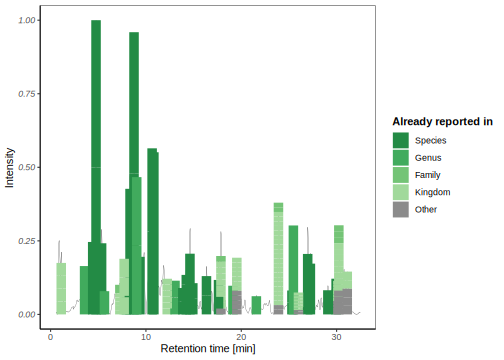
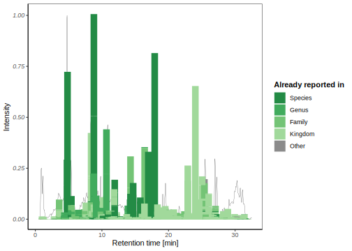
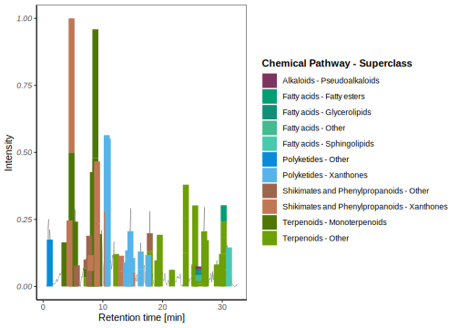
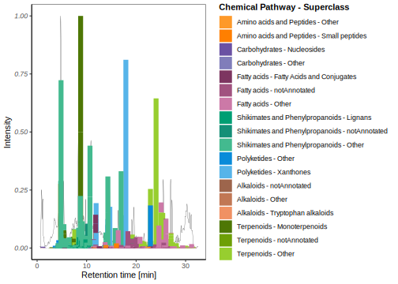

process_compare_peaks(show_example = TRUE)
#> loading MS data
#> Loading example MS file in memory, doing it on disk will be more efficient
#> loading chromatograms
#> loading name
#> loading feature table
#> preparing features
#> selecting 10 random features for the example
#> ... preparing features
#> ... keeping features above desired intensity only
#> setting joining keys
#> preprocessing chromatograms
#> preprocessing cad chromatograms
#> improving chromatograms
#> baselining chromatograms
#> preprocessing peaks
#> preprocessing cad peaks
#> joining peaks
#> joining within given rt tolerance
#> selecting features outside peaks
#> splitting by file
#> splitting by peak
#> normalizing chromato
#> preparing peaks chromato
#> preparing rt
#> preparing mz
#> processing cad peaks
#> extracting ms chromatograms (longest step)
#> count approx 1 minute per worker per 1000 features (increasing with features number)
#> varies a lot depending on features distribution
#> CAD Peak: 1
#> ■■■■ 9% | ETA: 1m
#> CAD Peak: 2
#> ■■■■■■ 18% | ETA: 1m
#> CAD Peak: 3
#> ■■■■■■■■■ 27% | ETA: 1m
#> CAD Peak: 4
#> ■■■■■■■■■■■■ 36% | ETA: 1m
#> CAD Peak: 5
#> ■■■■■■■■■■■■■■■ 45% | ETA: 44s
#> CAD Peak: 6
#> ■■■■■■■■■■■■■■■■■ 55% | ETA: 37s
#> CAD Peak: 7
#> ■■■■■■■■■■■■■■■■■■■■ 64% | ETA: 29s
#> CAD Peak: 8
#> ■■■■■■■■■■■■■■■■■■■■■■■ 73% | ETA: 22s
#> CAD Peak: 9
#> ■■■■■■■■■■■■■■■■■■■■■■■■■■ 82% | ETA: 15s
#> CAD Peak: 10
#> ■■■■■■■■■■■■■■■■■■■■■■■■■■■■ 91% | ETA: 7s
#> CAD Peak: 11
#> extracting ms peaks
#> comparing peaks
#> summarizing comparison scores
#> there are 13 scores calculated
#> selecting features with peaks
#> final aesthetics
#> checking export directory
#> exporting2 Processing
Adriano Rutz ![]()
This vignette describes the main processing function. It assumes you already checked the previous basic steps.
Compare peaks to features
To do so, you will need:
- A previously generated mzmine features’ table
Then, you should be able to run
And this basically it! 🚀
Pseudo chromatograms
If you know want to add some cosmetics, and you already have a TIMA annotation table, you can then run:
plots_list <- generate_pseudochromatograms(show_example = TRUE)The different plots offer the following views:
Taxo (major peaks)
plots_list$plots_1$histograms_taxo_maj
Taxo (minor peaks)
plots_list$plots_1$histograms_taxo_min
Confident unique annotations (major)
plots_list$plots_1$histograms_unique_conf_maj
Confident unique annotations (minor)
plots_list$plots_1$histograms_unique_conf_min
Or getting rid of the chromatogram:
Treemap semi-quantitative (major)
plots_list$treemaps$peaks_majTreemap semi-quantitative (minor)
plots_list$treemaps$peaks_minOr both together for comparison:
Treemap both
plots_list$treemaps$specialTabular reports
If you prefer tables rather than figures, you can also:
tables_list <- generate_tables(show_example = TRUE)This will export the table as CSV and/or HTML. A small preview of the HTML table is presented below:
tables_list$pretty_tableFor some other available helper functions, we now recommend you to read the next vignette.
Reuse
Citation
BibTeX citation:
@online{rutz2025,
author = {Rutz, Adriano},
title = {2 {Processing}},
date = {2025-10-27},
url = {https://adafede.github.io/cascade/articles/vignettes/II-processing.html},
langid = {en}
}
For attribution, please cite this work as:
Rutz, Adriano. 2025. “2 Processing.” October 27, 2025. https://adafede.github.io/cascade/articles/vignettes/II-processing.html.